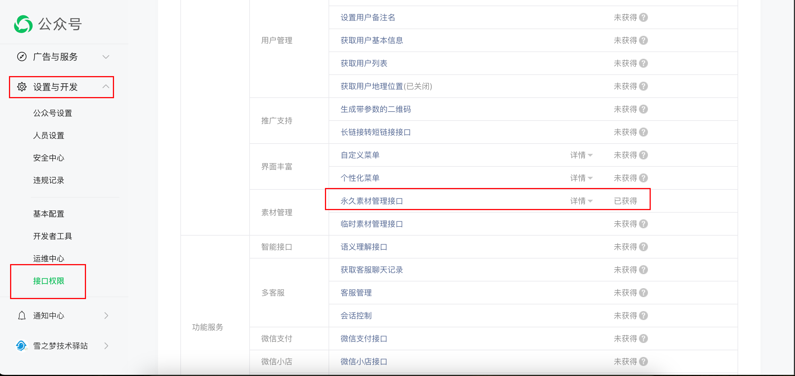
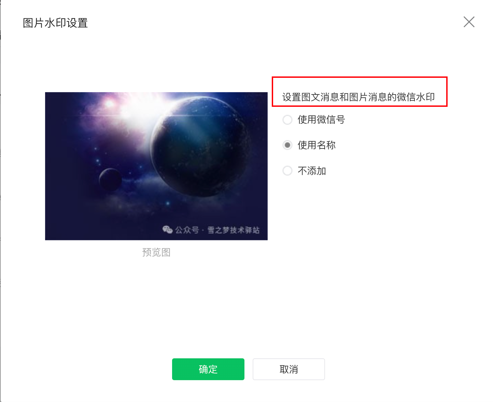
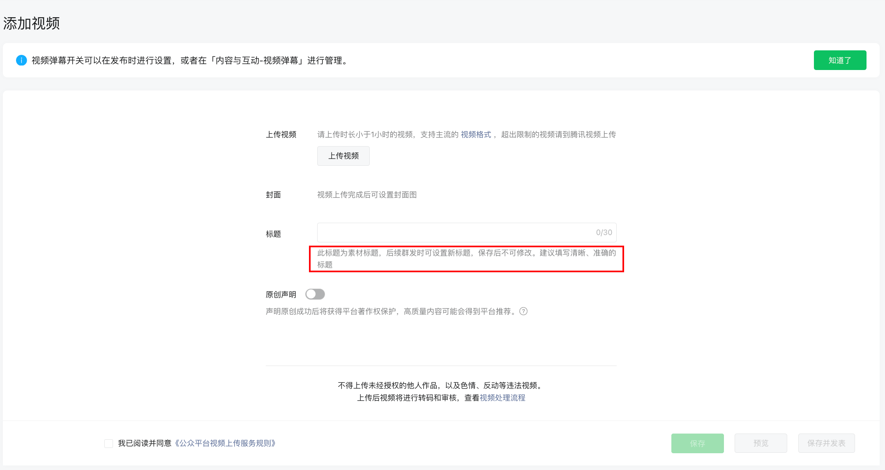
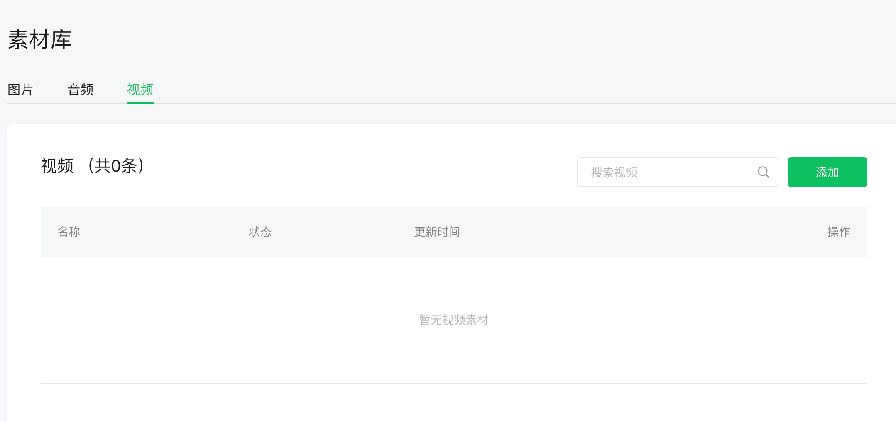
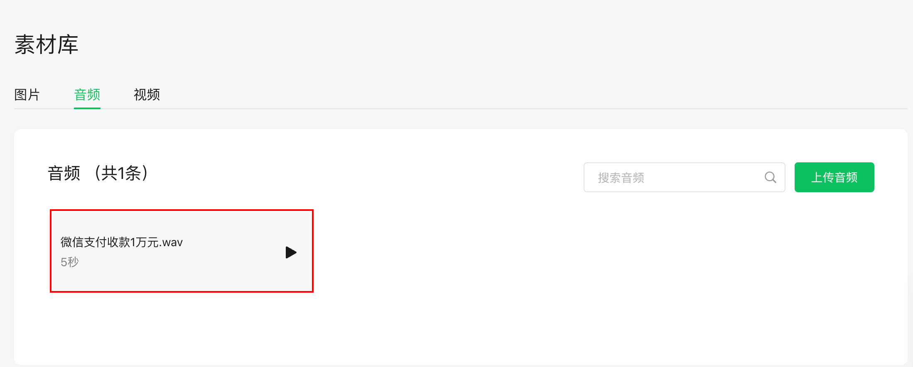
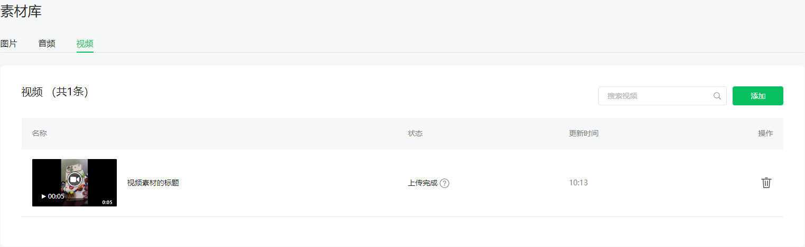
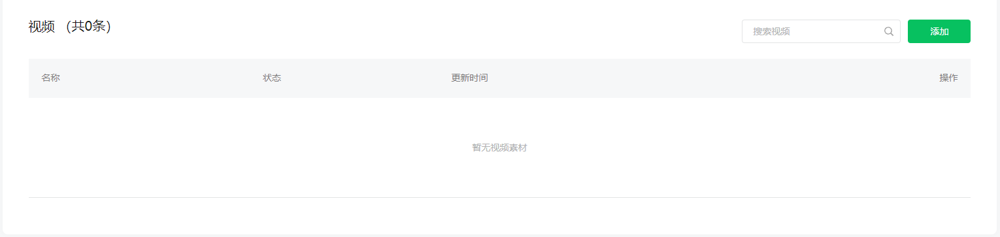
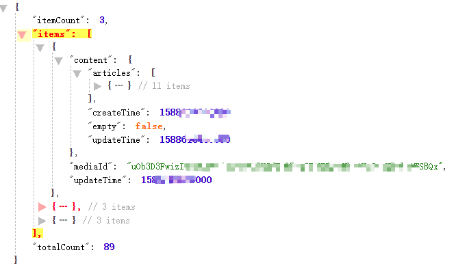
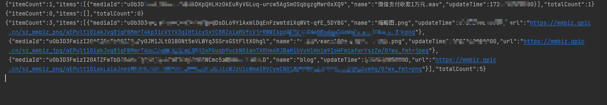
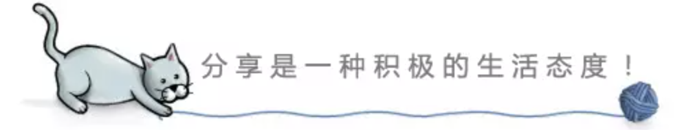

1. 没想到永久素材还能这么玩
致读者: 点击上方 “雪之梦技术驿站” → 点击右上角“ ... ”→ 点选“设为星标★ ” 加上星标，就不会找不到我啦！
1.1. 引言
开发微信公众号的过程中会遇到上传图片等素材的需求,还好不管是否认证过订阅号,都拥有永久素材的权限.

其中,这个永久素材的权限有一个特殊的上传图片接口,可以实现上传图文消息内的图片获取URL.
这是一个很有用的接口,只要稍微有一定的开发能力,接入公众号开发平台就能实现自定义微信图床功能.

也可以设置上传的图片是否需要添加水印,并且这个接口不占用永久素材的容量限制.
注意: 微信图片链接只能在微信自家平台使用,来自其他平台的引用无法使用哦!
1.2. 新增永久素材
1.2.1. 上传图文消息内的图片获取URL
本接口所上传的图片不占用公众号的素材库中图片数量的100000个的限制。图片仅支持jpg/png格式，大小必须在1MB以下。
简单写个测试方法验证一下接口:
如果还不了解如何快速接入微信公众号平台,请参考之前的系列文章: 微信公众号开发原来如此简单,这么多高级权限应有尽有!
/**
* 上传图文消息内的图片获取URL
* https://github.com/Wechat-Group/WxJava/wiki/MP_%E6%B0%B8%E4%B9%85%E7%B4%A0%E6%9D%90%E7%AE%A1%E7%90%86
*
* @throws WxErrorException
*/
@Test
public void testMediaImgUpload() throws WxErrorException {
// 上传图文消息内的图片获取URL
File file = new File("C:\\Users\\Administrator\\Downloads\\snowdreams1006-wechat-open.png");
WxMediaImgUploadResult wxMediaImgUploadResult = wxMpService.getMaterialService().mediaImgUpload(file);
System.out.println(JSON.toJSONString(wxMediaImgUploadResult));
}
得到的数据响应大概如下:
{"url":"http://mmbiz.qpic.cn/sz_mmbiz_jpg/aEPult10iakJvg8jqFBMmrT4kp3icVtYV3ib9TRO2xPGuqb9ucbNOianTXRhm6RJBaHibVvH1Hnia9IoHFmiafwrYszZw/0?from=appmsg"}
下面可以看到这个微信图片(只会在微信环境下看得到):
这个图片上传接口是入坑永久素材的唯一动力,不足之处就是对图片大小有要求,要么上传图片之前先压缩,要么调用下面的接口能允许上传
10MB大小的图片.
1.2.2. 新增其他类型永久素材
这里的其他类型,包括了图片在内的其他类型的媒体图片,可以上传图片,音频,视频等.
上传视频时需要设置更多信息,可以添加视频标题和描述,不过实测发现,视频描述再下一个接口获取中并没有设置成功,不知道为什么.

个人猜想: 虽然上传视频接口提供了视频标题和视频描述,但实际上只有视频标题会设置成功,这一点和公众号后台的上传功能倒是一致的.
/**
* 新增其他类型永久素材
* https://developers.weixin.qq.com/doc/offiaccount/Asset_Management/Adding_Permanent_Assets.html
* https://github.com/Wechat-Group/WxJava/wiki/MP_%E6%B0%B8%E4%B9%85%E7%B4%A0%E6%9D%90%E7%AE%A1%E7%90%86
*
* @throws WxErrorException
* @throws IOException
*/
@Test
public void testMaterialFileUpload() throws WxErrorException, IOException {
String mediaType = WxConsts.MediaFileType.IMAGE;
File file = new File("C:\\Users\\Administrator\\Downloads\\snowdreams1006-wechat-open.png");
WxMpMaterial wxMaterial = new WxMpMaterial();
wxMaterial.setFile(file);
wxMaterial.setName(file.getName());
if (WxConsts.MediaFileType.VIDEO.equals(mediaType)) {
wxMaterial.setVideoTitle("视频素材的标题");
wxMaterial.setVideoIntroduction("视频素材的描述");
}
WxMpMaterialUploadResult wxMpMaterialUploadResult = wxMpService.getMaterialService().materialFileUpload(mediaType, wxMaterial);
System.out.println(JSON.toJSONString(wxMpMaterialUploadResult));
}
这个接口需要注意的就是视频文件,因此作为通用上传接口时需要特殊处理上传视频文件的特殊情况.
图片（image）: 10M，支持bmp/png/jpeg/jpg/gif格式
只需要将文件更改为图片,调用上述上传接口就会得到如下结果:
{"mediaId":"uOb3D3FwizI20ATZFwTbDG3IQ_0y0JM1JLt01B0Nt5eVLWYq3SSrxGStFltXOhgl","url":"http://mmbiz.qpic.cn/sz_mmbiz_jpg/aEPult10iakJvg8jqFBMmrT4kp3icVtYV3ib9TRO2xPGuqb9ucbNOianTXRhm6RJBaHibVvH1Hnia9IoHFmiafwrYszZw/0?wx_fmt=jpeg"}
这里的媒体id字段
mediaId,可以在上传后保存下来,下次用到素材时根据mediaId即可获取到在线图片链接.
缩略图（thumb）：64KB，支持JPG格式
缩略图的上传方式和图片并无二致,唯一的不同之处就是对图片的大小有限制,虽然接口文档说明,支持JPG格式,但上传png也是成功的哦!
{"mediaId":"uOb3D3FwizI20ATZFwTbDNPgU7DsDL69YiAxmlDqEnFzwmtdiXqWVt-qfE_5DYBG","url":"http://mmbiz.qpic.cn/sz_mmbiz_png/aEPult10iakJvg8jqFBMmrT4kp3icVtYV3qIHticySxYC8RZoiaMVfcVjrRWWIspq3E7Vq6TH40Medqu5KoYmFavcg/0?wx_fmt=png"}
语音（voice）：2M，播放长度不超过60s，mp3/wma/wav/amr格式
和上传图片不同的地方,语音和视频不会返回在线链接,只返回了mediaId,想要获取具体内容的话,只能根据这个mediaId调用相关接口下载到本地.
{"mediaId":"uOb3D3FwizI20ATZFwTbDKpQHLHzOkEuRyVGLuq-urcw5AgSmOSqbgzgMwr0xXQ9"}
视频（video）：10MB，支持MP4格式
如果不想再次下载到本地使用而是作为素材引用方式,肯定需要记录mediaId并自建一套存储映射方案,所以微信公众号开发感觉就是一个坑,相当于要重新实现一套类似于微信公众号后台的管理系统.
{"mediaId":"uOb3D3FwizI20ATZFwTbDLCHA8P7Dbnkjks5SMdzoElgDIPNFcWn0i9NyZcy082L"}
1.3. 获取永久素材
在新增了永久素材后，开发者可以根据media_id通过本接口下载永久素材。公众号在公众平台官网素材管理模块中新建的永久素材，可通过"获取素材列表"获知素材的media_id。
请注意：临时素材无法通过本接口获取.
这是因为上传音视频不会像上传图片一样能够返回在线链接,这个获取永久素材的接口能做到的就是下载媒体素材到本地,搞不懂什么场景会用到这个接口?
难不成,本来素材就是存储在本地再上传到微信公众号平台,现在再下载回来?那不是微信网盘了嘛!

获取声音或者图片永久素材
图片的话可以直接返回在线链接,而音频文件的mediaId只会返回原始文件输入流,可以根据之前上传媒体文件时而自定义实现建立好的数据库查找所属信息,确保正确保存到文件.
你总不能期望上传的明明是音频,结果保存到视频格式吧?所以上传的媒体文件是需要一套自定义系统支持的,实现和公众号上传后台一样的功能.

/**
* 获取声音或者图片永久素材
* https://developers.weixin.qq.com/doc/offiaccount/Asset_Management/Getting_Permanent_Assets.html
* https://github.com/Wechat-Group/WxJava/wiki/MP_%E6%B0%B8%E4%B9%85%E7%B4%A0%E6%9D%90%E7%AE%A1%E7%90%86
*
* @throws WxErrorException
* @throws IOException
*/
@Test
public void testMaterialImageOrVoiceDownload() throws WxErrorException, IOException {
String mediaId = "uOb3D3FwizI20ATZFwTbDKpQHLHzOkEuRyVGLuq-urcw5AgSmOSqbgzgMwr0xXQ9";
InputStream inputStream = wxMpService.getMaterialService().materialImageOrVoiceDownload(mediaId);
File file = new File("C:\\Users\\Administrator\\Downloads\\testMaterialImageOrVoiceDownload.wav");
FileUtil.saveInputStreamToFile(inputStream,file);
}
获取视频永久素材的信息和下载地址
还记得上传视频时特殊的视频标题和描述吗?在这里,再一次体现视频素材的特殊性.
/**
* 获取视频永久素材的信息和下载地址
* https://developers.weixin.qq.com/doc/offiaccount/Asset_Management/Getting_Permanent_Assets.html
* https://github.com/Wechat-Group/WxJava/wiki/MP_%E6%B0%B8%E4%B9%85%E7%B4%A0%E6%9D%90%E7%AE%A1%E7%90%86
*
* @throws WxErrorException
* @throws IOException
*/
@Test
public void testMaterialVideoInfo() throws WxErrorException, IOException {
String mediaId = "uOb3D3FwizI20ATZFwTbDLCHA8P7Dbnkjks5SMdzoElgDIPNFcWn0i9NyZcy082L";
WxMpMaterialVideoInfoResult wxMaterialVideoInfoResult = wxMpService.getMaterialService().materialVideoInfo(mediaId);
System.out.println(JSON.toJSONString(wxMaterialVideoInfoResult));
}
可以看到的是,视频接口返回了视频标题和描述,但是视频描述字段估计是预留的,并没有真正生效.
{"description":"","downUrl":"http://mpvideo.qpic.cn/******.mp4?dis_k=******&dis_t=1723171381&play_scene=10000&auth_info=******&auth_key=******&save=1","title":"视频素材的标题"}
1.4. 删除永久素材
在新增了永久素材后，开发者可以根据本接口来删除不再需要的永久素材，节省空间。
请注意：
1、请谨慎操作本接口，因为它可以删除公众号在公众平台官网素材管理模块中新建的图文消息、语音、视频等素材（但需要先通过获取素材列表来获知素材的media_id）
2、临时素材无法通过本接口删除
3、调用该接口需https协议

/**
* 删除永久素材
* https://developers.weixin.qq.com/doc/offiaccount/Asset_Management/Deleting_Permanent_Assets.html
* https://github.com/Wechat-Group/WxJava/wiki/MP_%E6%B0%B8%E4%B9%85%E7%B4%A0%E6%9D%90%E7%AE%A1%E7%90%86
*
* @throws WxErrorException
* @throws IOException
*/
@Test
public void testMaterialDelete() throws WxErrorException {
String mediaId = "uOb3D3FwizI20ATZFwTbDLCHA8P7Dbnkjks5SMdzoElgDIPNFcWn0i9NyZcy082L";
boolean result = wxMpService.getMaterialService().materialDelete(mediaId);
System.out.println(result);
}
删除成功: true

1.5. 获取素材总数
1.永久素材的总数，也会计算公众平台官网素材管理中的素材
2.图片和图文消息素材（包括单图文和多图文）的总数上限为100000，其他素材的总数上限为1000
3.调用该接口需https协议
/**
* 获取素材总数
* https://developers.weixin.qq.com/doc/offiaccount/Asset_Management/Get_the_total_of_all_materials.html
* https://github.com/Wechat-Group/WxJava/wiki/MP_%E6%B0%B8%E4%B9%85%E7%B4%A0%E6%9D%90%E7%AE%A1%E7%90%86
*
* @throws WxErrorException
* @throws IOException
*/
@Test
public void testMaterialCount() throws WxErrorException {
WxMpMaterialCountResult wxMpMaterialCountResult = wxMpService.getMaterialService().materialCount();
System.out.println(JSON.toJSONString(wxMpMaterialCountResult));
}
{"imageCount":5,"newsCount":89,"videoCount":0,"voiceCount":1}
1.6. 获取素材列表
在新增了永久素材后，开发者可以分类型获取永久素材的列表。
请注意：
1、获取永久素材的列表，也包含公众号在公众平台官网素材管理模块中新建的图文消息、语音、视频等素材
2、临时素材无法通过本接口获取
3、调用该接口需https协议
根据类别分页获取图文素材列表
/**
* 分页获取图文素材列表
* https://developers.weixin.qq.com/doc/offiaccount/Asset_Management/Get_materials_list.html
* https://github.com/Wechat-Group/WxJava/wiki/MP_%E6%B0%B8%E4%B9%85%E7%B4%A0%E6%9D%90%E7%AE%A1%E7%90%86
*
* @throws WxErrorException
* @throws IOException
*/
@Test
public void testMaterialNewsBatchGet() throws WxErrorException {
WxMpMaterialNewsBatchGetResult wxMpMaterialNewsBatchGetResult = wxMpService.getMaterialService().materialNewsBatchGet(0, 3);
System.out.println(JSON.toJSONString(wxMpMaterialNewsBatchGetResult));
}

分页获取其他媒体素材列表
/**
* 分页获取其他媒体素材列表
* https://developers.weixin.qq.com/doc/offiaccount/Asset_Management/Get_materials_list.html
* https://github.com/Wechat-Group/WxJava/wiki/MP_%E6%B0%B8%E4%B9%85%E7%B4%A0%E6%9D%90%E7%AE%A1%E7%90%86
*
* @throws WxErrorException
* @throws IOException
*/
@Test
public void testMaterialFileBatchGet() throws WxErrorException {
WxMpMaterialFileBatchGetResult wxMpMaterialVoiceBatchGetResult = wxMpService.getMaterialService().materialFileBatchGet(WxConsts.MaterialType.VOICE, 0, 3);
WxMpMaterialFileBatchGetResult wxMpMaterialVideoBatchGetResult = wxMpService.getMaterialService().materialFileBatchGet(WxConsts.MaterialType.VIDEO, 0, 3);
WxMpMaterialFileBatchGetResult wxMpMaterialImageBatchGetResult = wxMpService.getMaterialService().materialFileBatchGet(WxConsts.MaterialType.IMAGE, 0, 3);
System.out.println(JSON.toJSONString(wxMpMaterialVoiceBatchGetResult));
System.out.println(JSON.toJSONString(wxMpMaterialVideoBatchGetResult));
System.out.println(JSON.toJSONString(wxMpMaterialImageBatchGetResult));
}

1.7. 总结
本文主要介绍了微信公众号平台开发过程中的永久素材的接口演示,其中个人最感兴趣的就是上传图文消息内的图片获取URL接口,可以直接上传图片并获取图片的在线链接.
注意: 图片格式和大小有限制,大小不能超过
1MB.
除了支持上传图片之外,语音和视频等媒体文件也支持上传到素材库,接口会返回媒体唯一标识mediaId.想要再次获取该媒体资源时,传入mediaId调用相关的接口可以再下载到本地.
永久素材管理的接口权限和微信公众号后台素材库是一致的表现行为,

1.8. 往期精彩文章
- 恨不相逢未嫁时的那么些电脑软件
- 如果能重来我会这么配置开发环境
- 平生不识Charles,网络分析也惘然
- 如今还值得开发微信公众号开发吗
- 看我如何玩转测试微信公众号开发
- 又见Gitbook却卡在了安装这一步
- Gitbook插件开发又被npm绊倒了
1.9. 欢迎扫码关注

欢迎扫码关注,私信回复『加群』一起交流技术
作者: 雪之梦技术驿站
来源: 雪之梦技术驿站
本文原创发布于「雪之梦技术驿站」,转载请注明出处,谢谢合作!